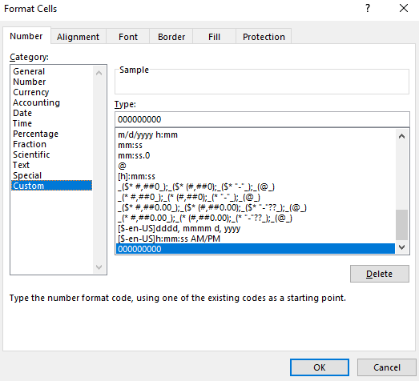

Pluralsight Excel 365 Training Notes
This document contains notes from the Pluralsight course on Excel 365, detailing key features and functionalities that are essential for mastering Excel in a professional setting.
Formatting
Discusses the importance of cell formatting for readability and data interpretation. Key topics include number formatting, cell styles, and custom formats.
Custom Number Formats
 Use Cases * Specific number formatting (Date, Time, Decimals, Accounting, Percentage, etc..) * Data from csv file need to be formatted for analysis in 3rd party application (Leading Zeros).
International Currency Formats
Display Data in Multiple International Formats
Working with Data
Covers the basics of data entry, manipulation, and sorting. Emphasizes on efficient data management techniques.
Outline Data
Insert Subtotals
Insert References
Reference Data in Another Workbook
Reference Data by Using Structured References
Consolidate Data
Configure Data Validation
Analyze Data
Look Up Data by Using the XLOOKUP Function
Look Up Data by Using the XMATCH Function
Power Query
Explains how to use Power Query for advanced data import and transformation. Highlights include merging and cleaning data sets.
Import, Transform, and Connect to Data
Combine and Display Data
Text Functions
Overview of functions like LEFT, RIGHT, MID, CONCATENATE, and TEXT to manipulate and analyze text data.
Format Text by Using RIGHT, LEFT, and MID Functions
Format Text by Using UPPER, LOWER, and PROPER Functions
Format Text by Using the CONCAT Function
Logical and Statistical Functions
Details the use of functions such as IF, AND, OR, COUNTIF, and AVERAGEIF for logical operations and statistical analysis.
Perform Logical Operations by Using the IF Function
Perform Logical Operations by Using the SUMIF Function
Perform Logical Operations by Using the AVERAGEIF Function
Perform Statistical Operations by Using the COUNTIF Function
Perform Statistical Operations by Using the SUMIFS Function
Perform Statistical Operations by Using the AVERAGEIFS Function
Perform Statistical Operations by Using the COUNTIFS Function
Perform Logical Operations by Using AND, OR, and NOT Functions
Expanded Functions
Introduces more complex Excel functions and how they can be used for in-depth data analysis.
Reference the Date and Time by Using the NOW and TODAY Functions
Serialize Numbers by Using DATE and TIME Functions
Perform What-If Analysis by Using Goal Seek
Perform What-If Analysis by Using Scenario Manager
Calculate Data by Using Financial Functions: PMT
Calculate Data by Using Financial Functions: PPMT & IPMT
Calculate Data by Using Financial Functions: FV
Error Checking
Teaches methods for identifying and correcting errors in Excel worksheets to ensure data accuracy.
Display Formulas
Trace Precedents and Dependents
Evaluate Formulas
Validate Formulas by Using Error Checking Rules
Monitor Cells and Formulas by Using the Watch Window
Conditional Formatting
Explains how to use conditional formatting to highlight key data points, compare data, and identify trends.
Apply Conditional Formatting
Create Custom Conditional Formatting Rules
Create Conditional Formatting Rules That Use Formulas
Manage Conditional Formatting Rules
Charts
Covers the creation and customization of various chart types to visually represent data.
Insert Sparklines
Create a New Chart
Add Additional Data Series
Switch Between Rows and Columns in Source Data
Analyze Data by Using Quick Analysis
Resize Charts
Move Charts to a Chart Sheet
Add and Modify Chart Elements
Apply Chart Layouts
Apply Chart Styles
Add Trendlines to Charts
Create Dual-Axis Charts
Save a Chart as a Template
Pivot Tables
Detailed walkthrough on creating and manipulating pivot tables for data summarization and analysis.
Create PivotTables
Modify Field Selections and Options
Create Slicers
Move Piviot Table Rows Fields into Seperate Columns
Group PivotTable Data
Format PivotTable Data
Add Additional Fields
Add Calculated Fields
Drill Down Into PivotTable Details
Create PivotCharts
Modify Field Selections and Options in PivotCharts
Apply Styles to PivotCharts
Drill Down Into PivotChart Details
Advanced Options
Explores advanced Excel settings and options for customization and enhanced productivity.
Display Hidden Ribbon Tabs
Configure Formula Calculation Options
Finalizing a Workbook
Tips on preparing a workbook for final presentation, including review, protection, and sharing.
Inspect a Workbook for Hidden Properties or Personal Information
Inspect a Workbook for Accessibility Issues
Inspect a Workbook for Compatibility Issues
Restrict Editiing and Protect a Workbook
Protect Workbook Structure
Encrypt a Workbook With a Password
Manage Workbook Versions
Macros and Form Controls
Introduces how to automate repetitive tasks and enhance user interaction using macros and form controls.
Create a Simple Macro
Modify a Simple Macro
Copy Macros Between Workbooks
Create a Maco Button
Insert and Configure Form Controls
Notes
These notes are a concise summary of the extensive functionalities of Excel 365 covered in the Pluralsight course, aimed at enhancing skills in data analysis and business intelligence.